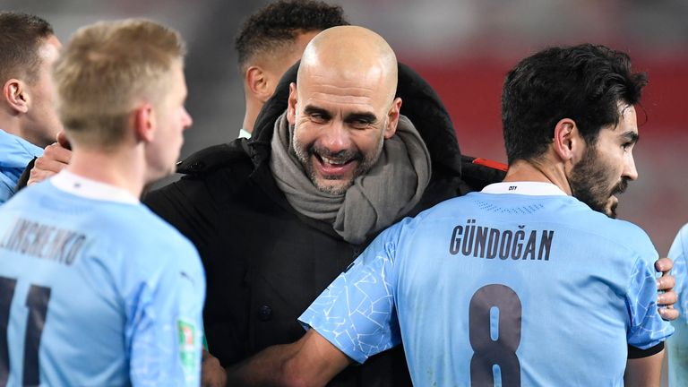

Manchester City wins 20th straight game to lead Premier League by 13 points
Agency 26 Feb 2021
The Blues have been faultless across all competitions since the middle
of December, with Pep Guardiola’s side now flying high as a result

Manchester City have made Football League history by opening a
calendar year with nine successive victories. The Blues preserved
their faultless record in 2021 by edging out Sheffield United at the
Etihad Stadium on Saturday. Gabriel Jesus netted the only goal of the
game in that contest, with Pep Guardiola’s resurgent side cementing
their standing at the top of the Premier League table.
hey have also booked their place in another Carabao Cup final, as they
look to land that prize for a fourth year in a row, progressed to the
fifth-round of the FA Cup and are sweeping aside all before them.
Since the turn of the year, City have proved too strong for Chelsea,
Manchester United, Birmingham, Brighton, Crystal Palace, Aston Villa,
Cheltenham, West Brom and Sheffield United. No side has ever been so
dominant in January, with an ambitious outfit adding another notable
entry to the history books.

The Blues’ winning run actually stretches back into 2020, with 12
straight victories secured stretching back to the middle of December –
when they were held to a 1-1 draw by West Brom on home soil. Nobody
has got close to them since then, allowing positive progress to be
made in more trophy quests. A stunning 12-game sequence represents the
longest winning run City have ever been on. Only Arsenal, who achieved
the same feat between August and October 2007, can claim to have
matched the Blues’ efforts in the Premier League era. Guardiola is
rightly proud of his side, but is aware that there are still plenty of
sizeable challenges to come before major silverware is handed out.